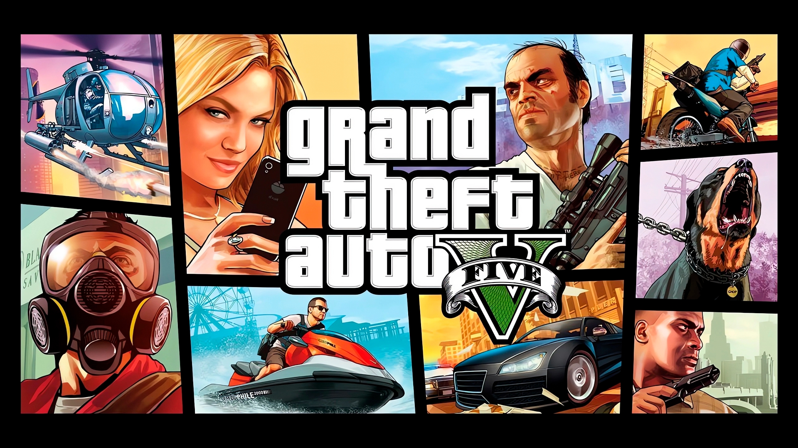
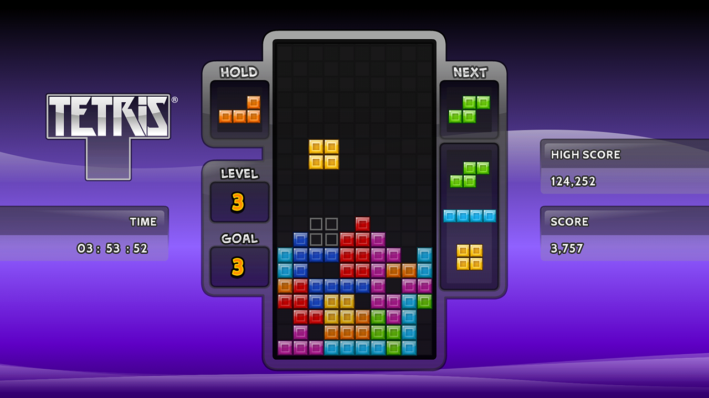
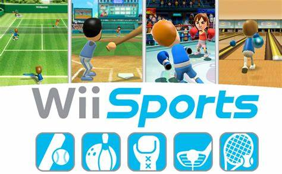

Top 5
Minecraft: Más de 300 millones de copias vendidas. Este juego de construcción y supervivencia ha conquistado a jugadores de todas las edades y plataformas.

Grand Theft Auto V (GTA V): Aproximadamente 185 millones de unidades vendidas. Su mundo abierto y narrativa envolvente lo han mantenido en los primeros puestos desde su lanzamiento.
Tetris (versión de EA para móviles): Más de 100 millones de descargas pagadas. Una versión moderna del clásico juego de rompecabezas, adaptada para dispositivos móviles.
Wii Sports: Alrededor de 82.9 millones de copias vendidas. Incluido con la consola Wii, este juego fue clave en la popularización de los controles de movimiento.
PlayerUnknown’s Battlegrounds (PUBG): Más de 75 millones de unidades vendidas. Pionero en el género battle royale, ha influenciado a numerosos títulos posteriores.